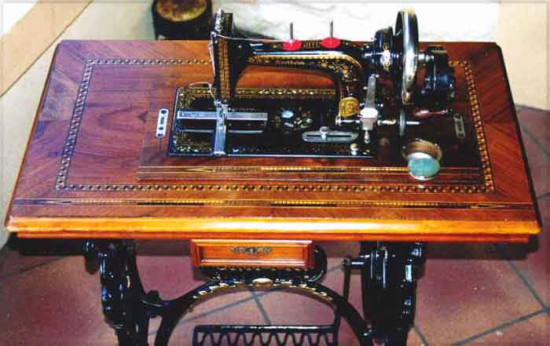
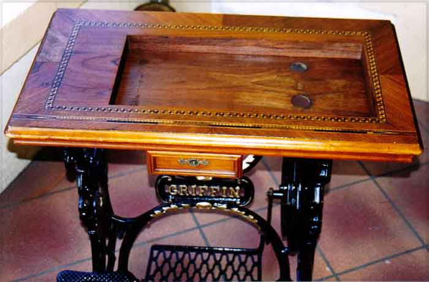
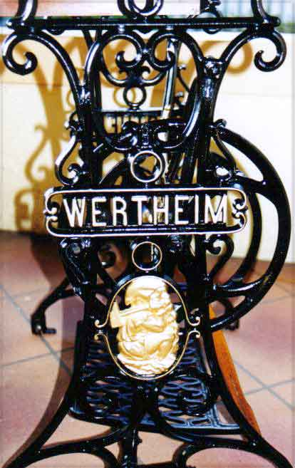
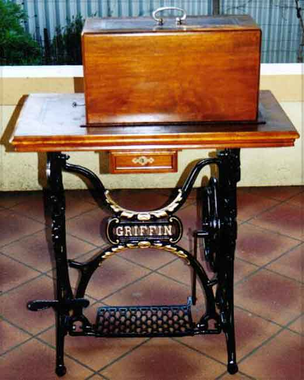

The NeedleBar
Hugo Wertheim
Melbourne, Victoria
Model Type:
Griffin TS Convertible Treadle
Pictures courtesy of Rob & Lynne
Sanders
Front View

Treadle Base

Base Ironwork

Base with Cover

This page may not be reproduced
or distributed in part or in whole without the prior written permission of
the copyright owner